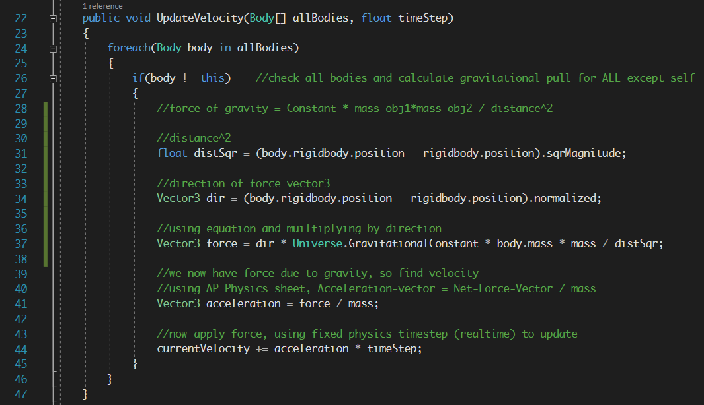

I used a muiltitude of formulas for this 'project', the main one from the AP Physics equations sheet being the formula for the force of acceleration.

This formula was important, but no so instrumental as the one for calculating the force of Gravity, using Big G the Universal Constant for gravity.
Knowing the gravitational constant to be 6.67408 × 10-11 m3 kg-1 s-2, and knowing how to calculate the acceleration of bodies in motion, I was able to create a very basic, rudimentary Solar System Simulation program.
The program is very simple; I create large bodies of great mass to form the 'planets' of the system. There are currently 6 oddly-named 'planets' in my make-believe solar system, including an earth-like planet called Thrae and its moon noom.
Then, I collect a list of all the bodies that exert gravity, and, using the aforementioned equations, calculate and apply all the forces which they exert upon each other, no matter how small.
The computer calculates fairly large/small numbers with ease and speed unhread of by the human hand, so its also fairly accurate (taking into account only what is in the simulation). In order for the 'planets' to orbit, they've also been given some intial velocity to propel them forward. As I don't know anythinga bout rotational forces, I had to kind of guess the force needed to propel it into orbit, leading to a few problems, but for the most part it works.
So here it is! I had lots of fun making this, hence why I took so long. Thank you!